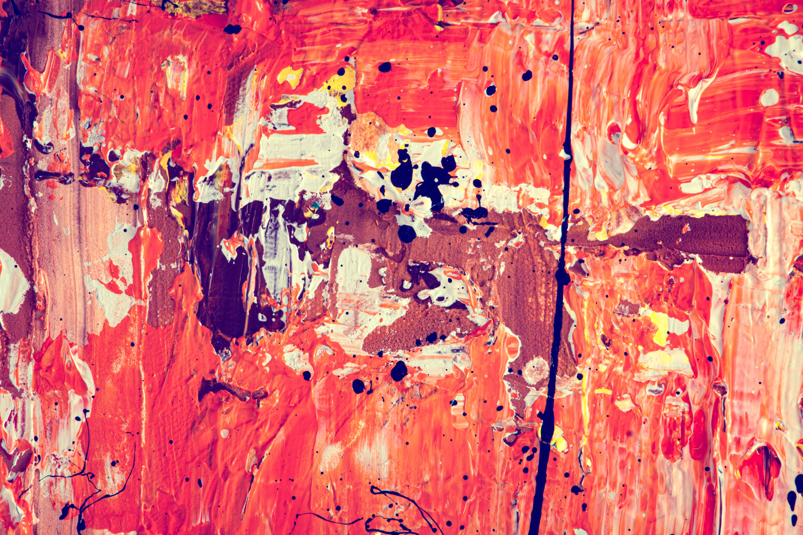

Please explore the tabs below to learn a little more about me Sophia.
I am a rising senior at Emory University studying for my BS in Mathematics and Computer Science. I was born and raised right outside of Nashville, TN beside two older sisters and a fair number of farm animals. These days I reside in Atlanta, GA, and call it home.
Fun(?) fact: I have only recently been using "Sophia" (my legal name) over "Sophie", so currently experiencing identity crisis but worth it for a little spicing of life.
I entered college planning to major in Biology, turned to Mathematics, and finally landed on Computer Science. Alongside my major, I am minoring in Gender and Sexuality studies. While I am unsure of exactly where my career path will end up taking me, I am interested in web design and user experience. I find a lot of personal gratificaton from the softer sciences in my conversations with friends and collegues as well as through practicing art and design.
Email: SophiaH@Instaboostmedia.com
Phone: (call or text) +1 (615) 972-4899
Carrier pigeon: The apartment complex with gray tiles. The buidling by the magnolia tree with the lopsided branches. (Will return pigeon fed and watered).